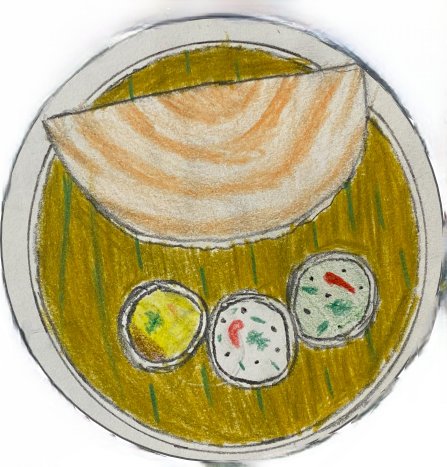

Rava Dosa
By- Amudhan Ramamurthy
Story :
- When I go home to my grandma’s house and I smell something that is absolutely delicious.
I wonder what it is… as I walk into the kitchen I find my grandma making one of my favourite
out of her recipes, Rava dosa every time I go to my grandma’s house, this is the one thing that
I must always have and will never forget the delightful taste of the crispness of the dosa with the
nice taste of the peanut chutney.
.

Ingredients :
- 1 cup rava
- 1 cup rice flower
- ½ cup maida
- 5 cups water
- 1 Tsp Cumin seeds
- 1 Tsp Black pepper
- 2 Tsp chopped ginger
- 2 Tsp chopped green chili
- Chopped curry leaves
Instructions :
- In a large bowl add rava, rice flower, maida, cumin seeds, black peppercorns, broken cashews and salt as needed and mix well.
- Next add finely chopped curry leaves and green chilies.
- Add water and mix. The batter should be thin and runny. Let it sit for 15-30 mins.
- Before making the dosas, add 1 tablespoon of rava and ½ cup more water to the batter and Mix.
- Meanwhile heat the cast iron pan for making the dosa. Once hot, set it on medium flame / heat sprinkle a few tiny chopped onions on the pan and drizzle some oil around them.
- Mix the batter well and take small portion of it in a glass.
- Pour it from a height starting from the edge of the pan towards the centre in circular motion, filling andy large gaps.
- This has to be done fast without over pouring batter in the same spot. Cook the dosa on medium flame / heat until the bottom is golden brown.
- Gently lift the dosa from the edges and fold it in half and move it away from the heat. Add extra water to the batter if it gets thick and mix it well before making each dosa.
- Repeat the process for each the rest of the batter. Serve with coconut, onion tomato or peanut chutney and sambar if you would like